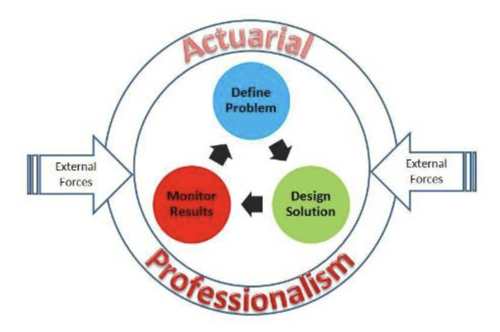
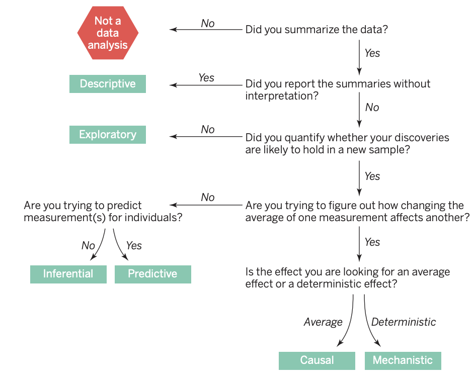

Slides: Introduction to Actuarial Data Science and State the Question
Actuarial Data Science Online Textbook
Dr. Fei Huang
Lecturer-in-charge
School of Risk and Actuarial Studies
E: feihuang@unsw.edu.au
- BSc (Math), MPhil (Act. Sci.), PhD (Act. Sci.), SFHEA
- Research: Ethical AI and Data Science for Insurance
- Teaching: Actuarial Data Science, Statistical Machine Learning, Data Visualisation and Communication
- Engagement: Industry, Government, Actuarial Professional Bodies
Activity: Getting to know you
- Self introduction
- Which industry are you working in (plan to work in)?
- What do you want to get most out of this course?
Course Introduction
- Moodle introduction
- Learning recommendations
- Relationship with ACTL3142/5110 and other courses
Anticipated achievements
- Data Science Actuary with problem-solving skills
- An end-to-end process to solve industry challenges
- Enhanced understanding and application of data science techniques in a real-world context
- Communication skills
- Working in groups
Reading List for this lecture
- The Art of Data Science, Chapters 1, 2 and 3.
Learning Objectives for this lecture
- Understand the process to do data analysis, which is a specific application of the Actuarial Control Cycle
- Explain the key iterative steps involved in a data analytics project
- Understand and explain the different types of questions
- Apply the process to do data analysis in a business setting
Aims of this course
“Data Science Principles – aims to extend students’ knowledge of modern analytical tools and techniques beyond those introduced in the Foundation Program subjects and to teach students how to apply this knowledge in real-life business settings”
From Data to Value
Why choose this course?
- With the development of internet, databases, internet of things (IOT) etc., data is everywhere.
- Data can be very valuable but it is only valuable if you can analyse and utilize it properly.
- “Insurance is about using statistics to price risk, which is why data, properly collected and used, can transform the core of the product” – Lemonade CEO Daniel Schreiber
- Actuarial Data Analytics: integrating data science to actuarial studies.
The goal of data analytics: ‘Data’ ==> ‘Value’
This course will cover the whole process of data anlaytics and its actuarial/business applications
Interdisciplinary Area
- An interdisciplinary covering many different kinds of knowledge.
- Statistics
- Machine Learning
- Database
- Optimization
- Algorithm and Programming
- Domain knowledge
- …
- This course mainly focuses on statistical machine learning and its actuarial applications.
Data Analysis is an Art
- Data analysis is an art. It is not something yet that we can teach to a computer.
- Data analysts have many tools at their disposal, from linear regression to classification trees and even deep learning, and these tools have all been carefully taught to computers.
- But ultimately, a data analyst must find a way to assemble all of the tools and apply them to data to answer a relevant question—a question of interest to people.
The Actuarial Control Cycle

Data Analysis Cycle
- Data analysis is a highly iterative and non-linear process, better reflected by a series of epicycles.
- The data analysis process is a specific application of the Actuarial Control Cycle and we call it Data Analysis Cycle (DAC).
Source: The Art of Data Science
The 5 steps of the data analysis cycle (DAC)
- Stating and refining the question
- Exploring the data
- Building formal statistical models
- Interpreting the results
- Communicating the results
The epicycle for each step
- Setting Expectations,
- Collecting information (data), comparing the data to your expectations, and if the expectations don’t match,
- Revising your expectations or fixing the data so your data and your expectations match.
Applying the Epicycle to Stating and Refining Your Question (Step 1)
You can now use the information about the types of questions and characteristics of good questions as a guide to refining your question. To accomplish this, you can iterate through the 3 steps of:
Establishing your expectations about the question
Gathering information about your question
Determining if your expectations match the information you gathered, and then refining your question (or expectations) if your expectations did not match the information you gathered
Activity
- Please form into groups and get to know each other.
- Please select one data science problem (based on your own experience) for your group.
- Please follow the epicycle analysis to state and refine your question (Step 1 of the Data Analysis Cycle).
- Please summarise the key points and share them on the Teams channel.
Questions1:
- Descriptive: summarize the measurements in a single data set without further interpretation.
- Example: Australian Census
- Exploratory: builds on a descriptive analysis by searching for discoveries, trends, correlations, or relationships between the measurements to generate ideas or hypotheses.
- Example: the four-star planetary system Tatooine was discovered when amateur astronomers explored public astronomical data from the Kepler telescope.
- Inferential: quantifies whether an observed pattern will likely hold beyond the data set in hand. This is the most common statistical analysis in the formal scientific literature
- Example: a study of whether air pollution correlates with life expectancy at the state level in the United States
Questions (continued):
- Predictive: uses a subset of measurements (the features) to predict another measurement (the outcome) on a single person or unit.
- Example: web sites use polling data to predict how people will vote in an election.
- Causal: asks about whether changing one factor will change another factor, on average, in a population.
- Example: decades of data show a clear causal relationship between smoking and cancer.
- Mechanistic seeks to show that changing one measurement always and exclusively leads to a specific, deterministic behavior in another.
- Example: data analysis has shown how wing design changes air flow over a wing, leading to decreased drag. Outside of engineering, mechanistic data analysis is extremely challenging and rarely achievable.
What is the Question?
“We have found that the most frequent failure in data analysis is mistaking the type of question being considered.”

Example
- Is it causal?
- Example: analyses of the relationship between cellphones and brain cancer (link)
Activity
- Please specify the question type your team has specified in the previous activity
- Plesae share the refined question and the question type by replying to your previous post in the Teams channel.
- Please challenge your questions:
- Why is this an important question? Who cares about this question?
- Has this question been already answered?
- Is this question answerable?
- Is this question too broad? Can we make it more specific?
- What makes a good question?
Characteristics of a Good Question
- The question should be of interest to your audience, the identity of which will depend on the context and environment in which you are working with data
- You should also check that the question has not already been answered.
- The question should also stem from a plausible framework
- The question, should also, of course, be answerable.
- Specificity is also an important characteristic of a good question.
Translating a Question into a Data Problem1
- Every question must be operationalized as a data analysis that leads to a result.
- Think through what the results of the data analysis would look like and how they might be interpreted.
- What sorts of questions don’t lead to interpretable answers?
- A question that uses inappropriate data – make sure that the data available to answer your question provide reasonably specific measures of the factors required to answer your question,
- a factor that you were not necessarily considering in your question is related to both your exposure of interest and your outcome of interest,
- the result is not interpretable because the underlying way in which the data were collected lead to a biased result,
- selection bias, which occurs when the data your are analyzing were collected in such a way to inflate the proportion of people who have both characteristics above what exists in the general population.
Business Environment
- Objectives
- Constraints
- Operating environment
- competitors
- consumers
- management issues
Activity
Assume you are an actuary working for a consulting firm. In your company, there are now two teams (Team A and Team B) working on different projects.
Team A works on forecasting the demand for a grocery retailer. This project needs to estimate the demand so the rest of the supply chain knows the amount of products to send to stores. Once the demand is predicted, the supply chain can work out how much to order, when and where to send it. Over-forecasting leads to waste. Under-forecasting leads to lost sales. Prediction accuracy is the most important consideration for this project.
Team B works on predicting the claims for a motor insurer, specifically for their comprehensive insurance product. This project needs to predict the number of claims and the amount of claims next year so as to set appropriate premiums for prospective policy holders. Over-estimating claims will make their premiums non-competitive and under-estimating claims could lead to losses. The interpretability and ease of implementation of the model is more important than prediction accuracy. However, the model should be reasonably predictive.
- Question: List the Objectives, Operation Environment, and Constratins for each of the cases.